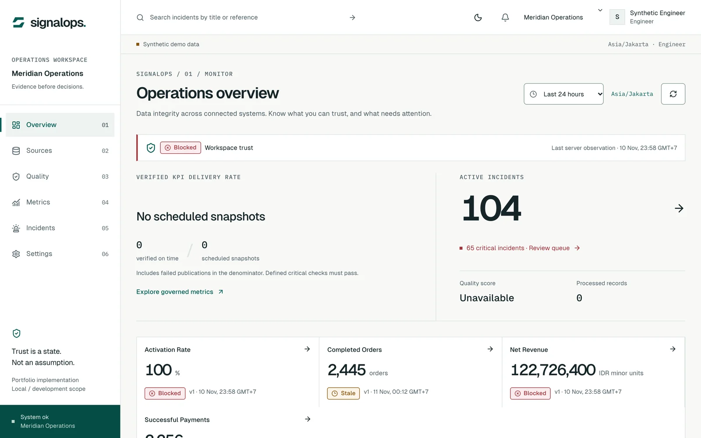
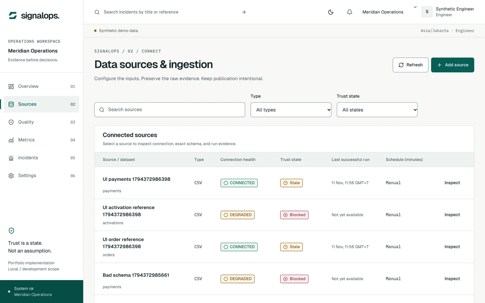
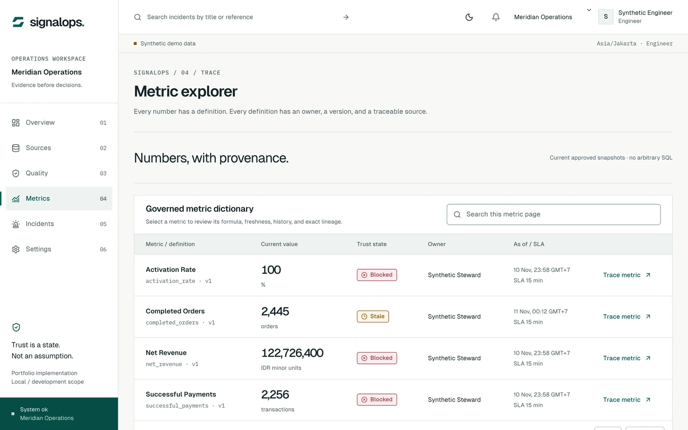
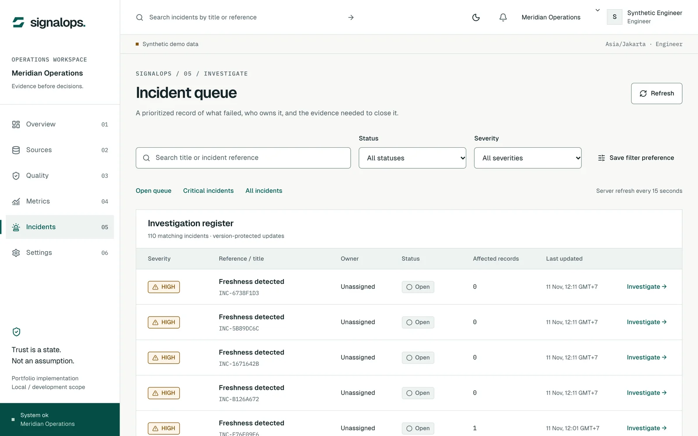

SignalOps
Every number carries its trust state, its source run and its definition.
- Role
- Solo — built from a written product spec (SIG-PRD-001); implemented with AI coding agents under my direction
- Stack
- FastAPI, PostgreSQL, Celery + Redis, S3-compatible storage, Keycloak (OIDC), Next.js, OpenTelemetry
- Timeline
- November 2026
- Status
- Built · tested locally · not deployed · no public repo

A dashboard that is wrong looks the same as one that is right.
A telecom-style business takes orders, collects payments and activates services in three systems. When a payments file arrives with a broken schema, or the same batch is sent twice, the revenue KPI is quietly wrong, and nothing on the dashboard says so.
SignalOps treats trust as a state the data has to earn. Its cycle is detect → validate → investigate → resolve → verify → publish.
Four rules the data has to pass.
CSV upload or REST source → raw evidence → validation → reconciliation → publication gate.
- 01
Keep the raw file, then check it
Every batch is stored with its SHA-256 before anything is parsed. Invalid rows go to quarantine with a reason; they never become trusted data and are never silently corrected.
- 02
A replay cannot move a KPI
Each request has an idempotency key and each event a unique source ID, so a retried or resent batch adds nothing. A changed event must carry a higher version number, or it is rejected.
- 03
Blocked is not zero
A failed critical check stops the new snapshot but keeps the last good one. Each KPI shows Verified, Warning, Stale, Blocked, Processing or Unavailable, and missing data is never shown as 0.
- 04
Close incidents on evidence
An incident can be resolved only with a reason and a passing check from a run published after the failure. A note alone is not enough.
Sources, metrics, incidents.
Sign-in goes through Keycloak; roles and tenant scope are checked on the server for every request. Ingestion and exports run in background workers, so the browser never waits on a large file.



Tested on one laptop. Not production.
| Check | Result |
|---|---|
| Backend: unit, PostgreSQL integration and API contract tests | 83 passing · 13 Nov 2026 |
| Frontend unit tests | 21 passing · 13 Nov 2026 |
| Browser journeys: sign-in, CSV and REST ingestion, publication gate, tenancy, offline, detect-to-close | 12 / 12 · 11 Nov 2026 |
| Encrypted backup and restore drill (database, identity, files) | Round trip passed locally |
- Not yet: a deployment, a load test (200 users and 10 million rows are targets in the spec, not results), TLS, managed secrets, alert routing to an external service, or a full accessibility audit.
- Some integration tests use stand-ins for storage and the message broker; a real worker crash under load has not been tested.
- The code was written with AI coding agents under my direction. The repository is not public yet.